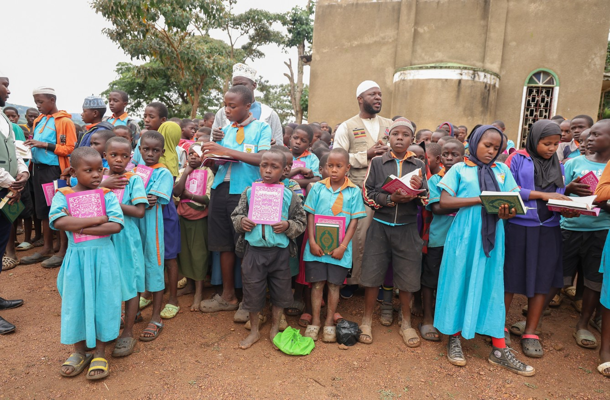

01
The possibility
A child has a dream before they have the means.
Talent and ambition exist in every community. Yet school fees, shoes, books or a difficult journey can quietly place education out of reach.